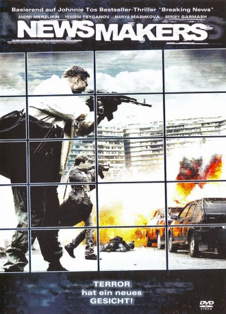

#2859 Newsmakers - Terror hat ein neues Gesicht!
Alternativ: Newsmakers (Englischer Titel)
 
 IMDB-Wertung: 5.9 / 10
IMDB-Wertung: 5.9 / 10  Metascore: 0
Metascore: 0 
Smirnov arbeitet bei der Polizei. Er gibt den Befehl, einen Waffendeal in Moskau undercover zu beschatten. Doch da hat er die Rechnung ohne zwei korrupte Verkehrspolizisten gemacht, die für das Misslingen verantwortlich sind, denn sie lösen eine unglückliche Gewaltkette aus - live übertragen im Fernsehen. Dies ist eine wahre Blamage für die Polizei und auch der Kreml ist nicht gerade begeistert...
Jahr: 2009
Dauer: 106 Minuten
FSK: 18
Land: Russland Studio: Savoy FilmTonspuren:
Untertitel:
Auflösung: 720p (1280x544) Größe: 4474 MB
Genre: Action, Thriller, Drama, Krimi
Regisseur: Anders Banke
Drehbuch: Hing-Ka Chan, Sam Klebanov, Aleksandr Lungin, Tin-Shing Yip
Soundtrack: Anthony Lledo
Darsteller:
- Andrey Merzlikin als Smirnov
- Maria Mashkova als Katya
 Sergey Garmash als Killer
Sergey Garmash als Killer- Alena Gorenko als Vedushchaya novostey
- Evgeniy Tsyganov als German
- Maksim Konovalov als 'Kley'
- Aleksey Frandetti als 'Orda'
- Pavel Klimov als Kolyan
- Sergey Vesnin als 'Kon'
- Artyom Semakin als Valera
- Viktor Chepelov als Sanya
- David Stepanyan als Gamlet
- Oleg Chernigov als Mikhalych
- Pyotr Rytov als Polyakov
- Yuriy Shlykov als Boldyrev
- Pavel Sukhov als Adyutant Boldyreva
- Vladimir Lyod als Petrushin
- Grigoriy Baranov als Yura
- Ivan Sukhanov als Vadik
- Sofya Khilkova als Sonya
- Aleksandr Rashchupkin als Vovchik
- Sam Klebanov als Roman
- Loa Falkman als Tilstrem
- Pavel Stepanov als Gaishnik 1
- Yuriy Kruglov als Gaishnik 2
- Pavel Misailov als Plachushchiy militsioner
- Evgeniya Ermakova als Zhena militsionera
- Yuliya Kronrod als Devochka na skutere
- Sergey Bagiev als Vrach skoroy pomoshchi
- Galina Chelnokova als Dama v bigudi
- Yuriy Chigrov als General
- Anton Fyodorov als Choknutyy
- Fyodor Gorbunov als Menedzher
- Kseniya Ivanova als Devushka choknutogo
- Anna Kachko als Korrespondent TV
- Leonid Kalarash als General FSB
- Gennadiy Khrapunkov als Dokladchik
- Yakov Klebanov als General
- Anton Komolov als Vedushchiy radio 'Mayak'
- Vasiliy Maslennikov als Korrespondent TV
- Natalya Melnik als Aksinya
- Aleksey Mitrofanov als Politik
- Yuliya Pankratova als Vedushchaya novostey na Pervom kanale
- Evgeniya Popova als Korrespondent TV
- Aleksandr Samokhvalov als Polkovnik spetsnaza
- Olga Shakina als Korrespondent TV
- Oleg Shapko als Starik
- Roman Shcherbina als Korrespondent TV
- Olga Shelest als Vedushchaya radio 'Mayak'
- Igor Skurikhin als Polkovnik OMONa
Datei: X:\FSK18-2000-2009\Newsmakers - Terror hat ein neues Gesicht! (2009, FSK18, 1280x544).mkv seit 25.12.2015
Festplatte: FSK18
 Es gibt insgesamt 106 Filme in der Gruppe 'FSK18-2000-2009'
Es gibt insgesamt 106 Filme in der Gruppe 'FSK18-2000-2009'